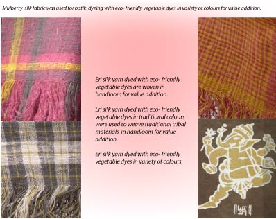

Eco- Friendly Dyeing of Silk for value addition including Batik , Tie and dye with Vegetable Dye.
- Socialy Responsive Design
- Semiautomatic Handloom
- IITG-KVIC TBUSemiautomatic Loin Loom
- Vegetable Dye
- Jute Weaving Semiautomatic Hanaloom
- Low Cost Dental Chair
- Transportation Design
Rubus
Ableped
Abroboat
Power tiller
Dipbahan
Dipbahan plus
Dipbahan utlity
Multi-purpose Tricycle
Vending Cart
- Equipment Design
Bamboo Proces
MRMC
- Water
Bulk- Packging Drinking water
Iron Removal Filter
- Explorations
KVIC-IIT Guwahati TBU project
Under the KVIC interfaceproject, eco-friendly vegetable dyeing of Silk available in North Eastern Region has been carried out and implemented through NGOs.
Apparels stitched from fabrics of Ethnic design woven in Eri silk yarn dyed with vegetable dyes are being exported by one NGO.
Batik and Tie and Dye work is also implemented successfully in mulberry silk fabric.
Standardisation was done for various input materials and shade cards made. Fastness of dye was another area explored.
Sponsored amount:
Rs. 10.28 lacs for this sub head.
.

...........
..dasak@iitg.ernet.in
..T: +91-361-2582454